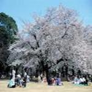
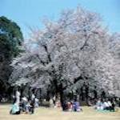
新宿御苑
(しんじゅくぎょえん)
03-3350-0151
03-3350-1372
shinjuku@env.go.jp
新宿御苑「環境省」
9:00~16:00
(16:30閉園)
※温室建替工事中です
毎週月曜日
(祝祭の場合は翌日)、
年末年始
(12月29日~1月3日)
約1時間~1時間半
15歳以上200円、
小・中学生50円、
幼児無料
利用カード/利用不可
障害者手帳お持ちの方と
介助者1名の入園は無料です。
（コピー不可）
高齢者割引はございません。
首都高速道理4号線「御苑」出口をおり、御苑東通りを早稲田方面に進む。「四谷三丁目」交差点を左折し、新宿通りの「新宿一丁目」交差点を左折し正面が（大木戸）駐車場
東京メトロ丸の内線 新宿御苑前駅 1番出口から徒歩約5分 JR総武線「千駄ヶ谷」駅から徒歩約5分
新宿WEバス「新宿御苑」バス停からすぐ
5台
3時間まで2000円、以後30毎400円
200台
3時間まで500円、以後30分毎100円
予約はできません。時間は8:00~20:00(入庫は19:00まで)
学生
グループ
カップル
ファミリー
シニア
シルバー
都指定歴史的建造物
重要文化財 旧洋館御休所
東京都歴史的建造物 旧御涼亭
その他サービス
| 体験プログラム | あり
母と子の森自然教室 親子を対象とした自然教室です。詳しくはホームページをご覧下さい。 |
設備案内 | トイレ設備あり 飲食施設
ペット同伴不可 (補助犬は入園できます) |
外国語パンフレット | 英語 中国語(簡体) 韓国語 |
|---|
 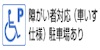
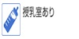
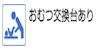
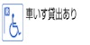
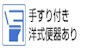
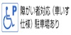
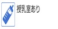
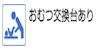
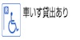
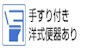